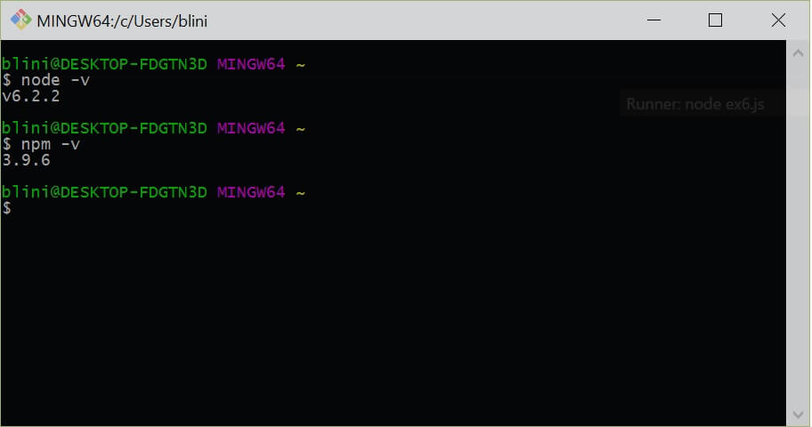
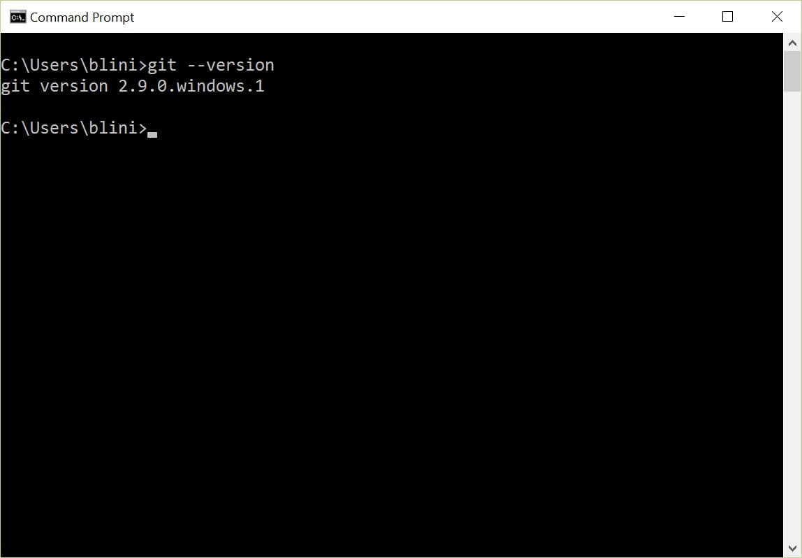
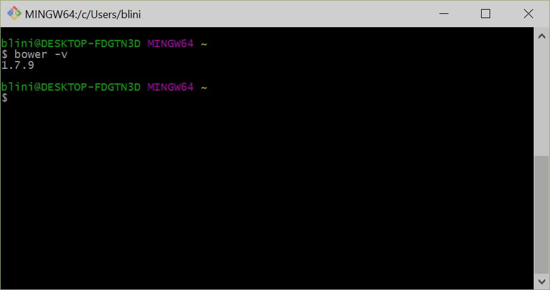
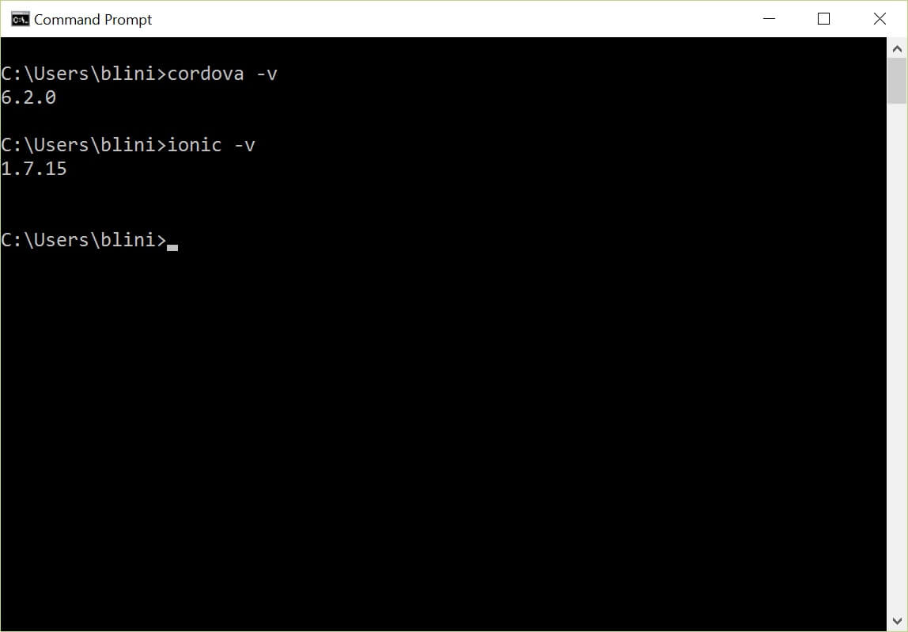
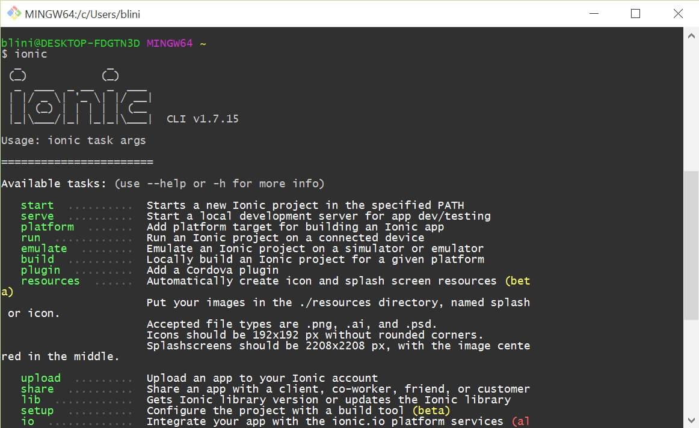
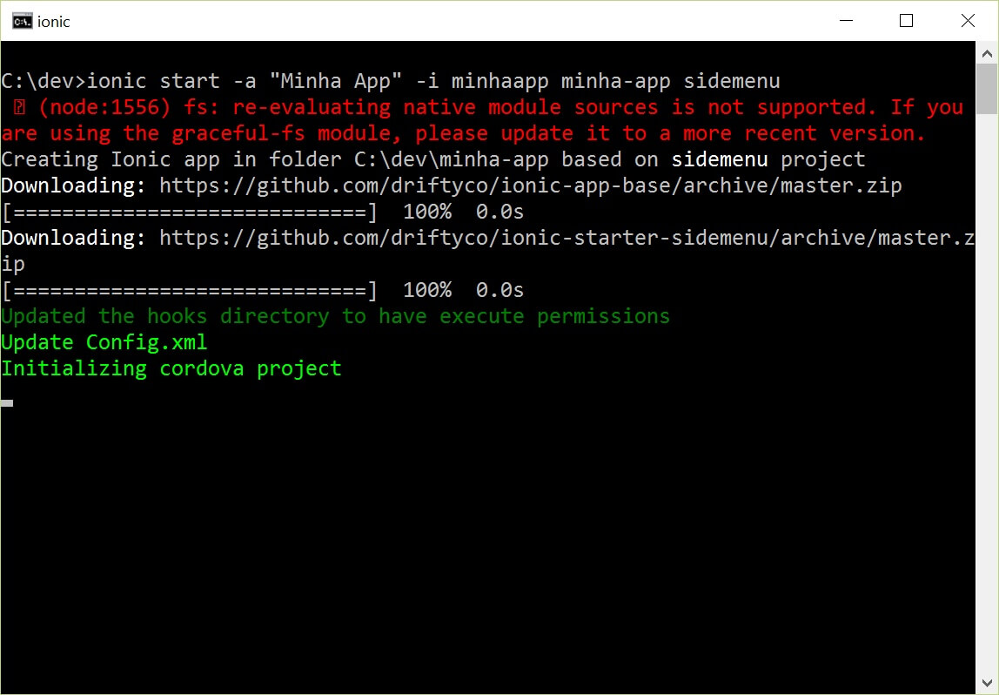
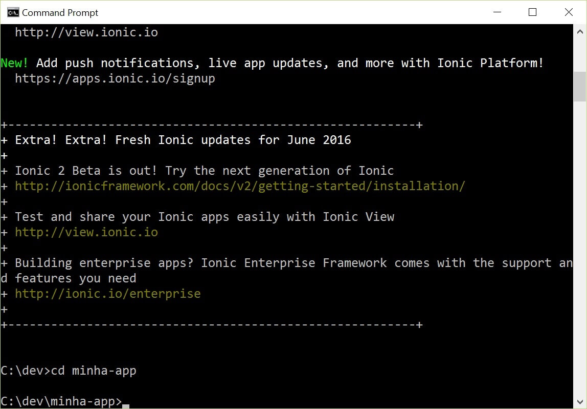
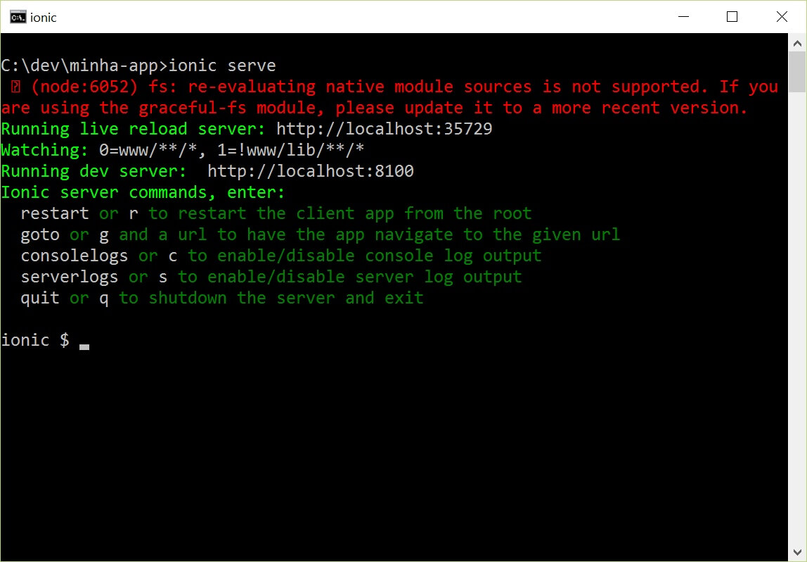
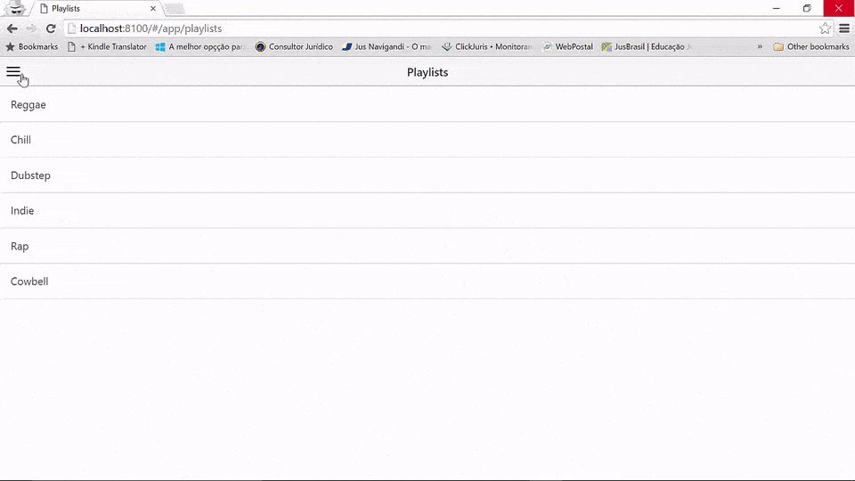

O Ionic é um framework front-end e open-source para desenvolvimento de aplicativos móveis híbridos Cross-Platform escritos em HTM, CSS e JavaScript.
Com o Ionic é possível escrever código uma única vez e ter um aplicativo que roda ‘nativamente’ (entre aspas pois não é 100% nativo) no iPhone, Android e Windows Phone. Isso é possível pois estes Sistemas Operacionais Móveis possuem APIs (Application Program Interface) usadas para que seus programadores desenvolvam aplicativos nativos para a plataforma. O que o Ionic faz é, através do Apache Cordova, ajudar-nos a comunicarmos com estas APIs que, por sua vez, comunicam-se com um componente chamado Web View, usado por aplicativos nativos para visualização de páginas web dentro do contexto dos aplicativos móveis (como um Browser qualquer). O Ionic permite que nosso aplicativo rode embarcado dentro dessa Web View, que interpreta e renderiza nosso código HTML, CSS e JavaScript, como qualquer outro navegador moderno. O Ionic basicamente estiliza nossos componentes HTML para se parecer com os componentes nativos de cada plataforma móvel alvo, simulando a experiência nativa do usuário final (o que seria um trabalhão fazermos na mão) e usa esse ‘navegador’ para rodar os aplicativos e disponibiliza bibliotecas JavaScript para acessarmos o hardware e tecnologias nativas do device como câmera, GPS, Bluetooth, etc (o que também seria um trabalhão pra fazer na mão).
Como o nome sugere o aplicativo não será nativo, e sim híbrido. O Ionic empacota a aplicação em arquivos instaláveis para cada plataformas móvel que então pode ser publicado nas principais lojas de aplicativos móveis e ser distribuída para o público-alvo. Ele também nos oferece excelente produtividade e serviços como o Ionic Platform que ajuda em tudo que uma aplicação precisa ter (push notifications, autenticação, etc), Planos Empresariais, e um CLI (Command-line Interface) que te dá muita produtividade através de linhas de comando.
E é claro que, como o código que você vai escrever é puramente HTML, CSS e JavaScript, você poderá rodar e visualizar a aplicação no seu navegador web preferido. E pra fecharmos o assunto ‘aplicativos híbridos’, com esse mesmo código, excluindo a parte do Cordova, pode-se criar uma aplicação Desktop Cross-Platform, com ajuda de tecnologias como o Electron, que empacota código Web para rodar em Mac, Windows e Linux. O Ionic nos ajuda no mundo Mobile e o Electron no mundo Desktop, e juntando as duas tecnologias você pode ter uma aplicação 100% híbrida e Cross-Platform Mobile e Desktop.
Eu pessoalmente não recomendaria uma abordagem tão híbrida dessa, já que cada plataforma tem suas peculiaridades e algumas vezes exige nossa atenção especial para criar códigos personalizados. Lembre-se, experiência do usuário em primeiro lugar! Isso foi apenas para ilustrar o que realmente é uma aplicação híbrida. Entretanto, no mundo Mobile, o Ionic faz o serviço muito bem feito.
O Ionic é baseado no AngularJs e por isso você irá escrever directivas do Angular no seu HTML e usar os seus módulo: services, controllers, factories, routes, etc. No Angular 2 muita coisa mudará e o Ionic 2 está sendo construído em cima dele, porém até o momento da escrita desse artigo, o Ionic 2 ainda está em fase beta e o Angular 2 em um RC (Release Candidate) que ainda está muito instável, por isso a versão 2 será assunto de futuros artigos.
Preparando o Ambiente
Os softwares e tecnologias necessários para criar aplicativos com o Ionic são os seguintes:
- Node.js - Requerido pelo Ionic para uso do CLI e em tarefas de build
- NPM (instalado junto com o Node.js) - Para gerenciarmos nossas dependências
- Git - Para o Ionic fazer o scaffolding dos templates iniciais, e também usado pelo Bower
- Bower - Para gerenciar nossas dependências no front-end
- Cordova e Ionic CLI
Você também vai precisar de um editor de texto. Eu uso e recomendo o VS Code (https://code.visualstudio.com) que é um excelente fork do Atom com fantático suporte ao JavaScript. Eu também recomendaria o Sublime Text, porém você pode usar qualquer um de sua preferência.
Instalando o Node.js e npm
- Acesse o site do Node.js em http://nodejs.org
- Clique no botão de download para baixar a versão específica para o seu SO
- Instale o Node.js clicando no instalador baixado
Isso irá instalar a versão escolhida do Node.js e o NPM.
Para verificar a instalação, abra o terminal do seu computador e digite:
node -v e npm -v
Se a instalação foi um sucesso isso retornará a versão instalada de cada um:

Instalando o Git
- Acesse a página do Git no site: https://git-scm.com/download
- Clique no botão de download compatível com o SO da sua máquina
- Instale o Git clicando no instalador baixado
Para verificar a instalação do Git, digite no terminal:
git --version
Isso retornará a versão instalada caso o Git tenha sindo instalado com sucesso.

Instalando o Bower
O Bower é instaldo através do NPM (Node Package Manager), o gerenciador de pacotes do Node.js, aquele que é instalado junto com o Node.js.
Para isso precisamos abrir novamente o terminal e digitar o seguinte comando:
npm install -g bower
Esse comando instala o módulo do Node chamado Bower globalmente (-g). No linux você deve instalar digitando:
sudo npm install bower
Mais uma vez, verificando a instalação:
bower -v

Instalando o Cordova e o Ionic CLI
O Ionic CLI engloba o Cordova CLI com comandos adicionais, e para isso precisamos também instalar o Cordova globalmente, usaremos o npm mais uma vez.
Novamente, nada complicado, abra o terminal e digite:
npm install -g cordova ionic
Isso baixará e instalará globalmente em sua máquina o Cordova e o Ionic CLI no mesmo comando. Pode demorar um pouco dependendo da sua conexão.

Verifique a instalação digitando no terminal
cordova -v e ionic -v

Pronto, o Ionic CLI está instalado. Agora podemos digitar ionic no terminal e visualizar os comandos disponíveis para ter uma ideia do que podemos fazer via de linha de comando:
ionic

Agora estamos prontos pra continuar!
Iniciando a Aplicação
O Ionic possui 5 templates disponíveis no GitHub para você iniciar uma aplicação:
-
Blank: um template vazio, sem pacotes pré-instalados e com apenas uma página.
-
Tabs: Aplicação de exemplo usando o sistema de navegação em abas do Ionic.
-
Side Menu: Mesma aplicação de exemplo do Tabs porém, ao invés de abas, um sistema de navegação em menu lateral deslizante.
-
Maps: Template com apenas uma página com um mapa renderizado e Geo Localização pronta.
-
Sales Force: Template com com código integrado à API do CRM da ForceSales.
Para fazer o scaffolding da sua primeira app e rodá-la é muito simples, abra o terminal e digite:
ionic start -a “Minha App” -i minhaapp minha-app blank
Onde:
-
-a “Minha App” é o nome amigável do seu aplicativo
-
-i minhaapp é o ID aplicativo
-
minha-app é o nome da pasta ou o local onde o aplicativo com o template escolhido será gerado
-
blank é o template escolhido entre as opções blank, tabs, sidemenu, maps e salesforce
Ou use a forma reduzida: ionic start minha-app blank
Onde:
-
minha-app é o ID aplicativo
-
blank é o template escolhido entre as opções blank, tabs, sidemenu, maps e salesforce

Aguarde um pouquinho, o Ionic irá baixar os arquivos hospedados no GitHub para a sua máquina. Depois da aplicação inicializada e o scaffold do template feito, acesse a pasta onde o app foi gerado digitando no terminnal:
cd minha-app

Para visualizar o aplicativo é muito simples, lembra que o aplicativo desenvolvido com o Ionic roda embarcado em um navegador? Pois é, basta levantar um servidor http e acessar pelo navegador. O Ionic faz isso pra gente automaticamente, basta digitar no terminal:
ionic serve
Com esse comando o Ionic irá levanta um servidor http na porta 8100 e abrir o navegador padrão do sua máquina com o app rodando.
Ele ainda mostra alguns comandos úteis no terminal:

Caso ocorra algum erro, tente rodar em uma porta mais alta, colocando o número da porta no final do comando, assim:
ionic serve -p 9000

Para destruir o servidor e destravar o terminal digite:
crtl + c
No próximo artigo vamos ver um pouco sobre a estrutura dos arquivos e arquitetura do projeto gerado pelo scaffolding do Ionic e como personalizar o aplicativo. Assim como configurar as plataformas iOS e Android pra emular nosso aplicativo, rodar o aplicativo diretamente no celular e usar o Ionic View para mostrar o aplicativo para os seus clientes e amigos e receber feedbacks.